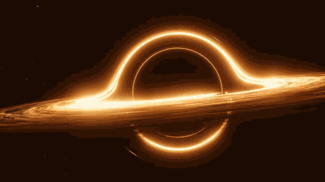

A black hole is a place in space where gravity pulls so much that even light can not get out. The gravity is so strong because matter has been squeezed into a tiny space. This can happen when a star is dying. Because no light can get out, people can't see black holes.
Black holes have two parts. There is the event horizon, which you can think of as the surface, though it's simply the point where the gravity gets too strong for anything to escape. And then, at the center, is the singularity. That's the word we use to describe a point that is infinitely small and infinitely dense.
Most black holes form from the remnants of a large star that dies in a supernova explosion. (Smaller stars become dense neutron stars, which are not massive enough to trap light.)